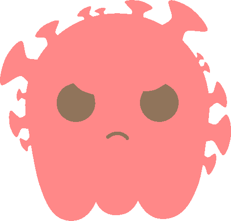
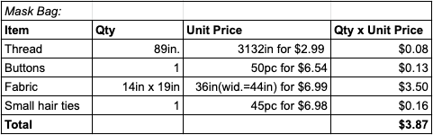

Pack-A-Mask: Every time you take off your mask, or bring it around with you, you bring unnecessary risks to your health and mask.Instead of wasting the precious filters(N95 or otherwise), which are expensive and hard to come by, you can preservethe lifespan of your mask’s filter. Pack-A-Mask is a double-layered bag of fabric, that is an additional layer ofprotection, to keep away germs and bacteria from your mask. This washable and reusable mask bag has a button to keep your mask safe, all the while keeping a slight pocket of air at the top. This prevents germs and bacteria fromgrowing within a humid and damp environment. Finally, this bag also has a metal clasp to attach to your jeans, or bagfor easy portability. You won’t have to worry about looks either. This bag has patterned fabric, and bright colors,that will make sure you won’t lose the bag, and will catch the attention of others.
Virus research(scroll down): Viruses can be spread by many things including sneezes, coughs, and even when breathing normal air inside or out.Viruses can also be spread when you're sweating, like out on a run with your dog or playing games outdoors. Anotherway viruses could be spread is by physical contact. For example, when you're shaking hands with someone, hugging afriend, etc. When germs are being spread you could get sick. Some ways to prevent viruses are staying home whenyour sick, cleaning things you’ve touched when you’re sick, and disinfecting frequently. Another way to preventspreading viruses is coughing or sneezing in a tissue, using hand sanitizer frequently, and most importantly,washing your hands! Now, during Covid-19 people need to wear masks and wash their hands frequently right? Well, that’swhy we have made something to spice things up! That is why we have decided to sell mask holders to better your dayout in the world and help prevent viruses and bigger problems that have a huge impact.Sources:Kids HealthCDC Safety Poster
Our COGS(scroll down): Here are the COGS for our materials, which were: thread, cotton fabric, buttons, and small hairties. In total, it will cost us $3.87 to make each bag. Materials list:
White Thread(Amazon) Buttons(Amazon) Small Hair ties(Amazon) Cotton Fabric(Joann's)